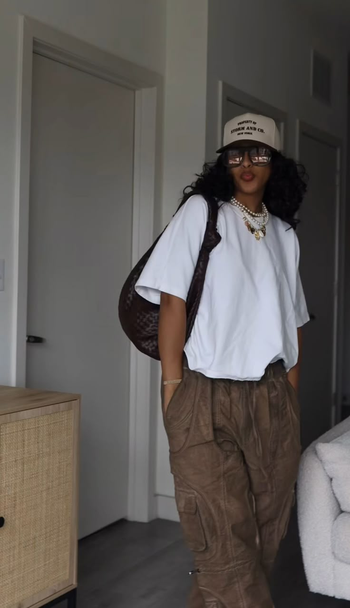

Onose Mercy Elo
A passionate On-Air Personality, Radio Host, Event Anchor and Voice-Over Artist - Often reffered to as the lark sparrow of the airwaves for her bright, melodious presence behind the mic. Her love for broadcasting began in childhood, inspired by the voices of TV personalities who sparked her dream of a career in media.

While in school she regularly participated in radio and TV practicals, building a strong foundation in broadcasting. She further developed her skills through internships at radio stations, gaining valuable hands-on experience.
During her NYSC, Onose co-anchored events such as social night activities, sharpening her stage presence and public speaking skills. Trained in diction and elocution, she delivers each performance with clarity, warmth and flair.